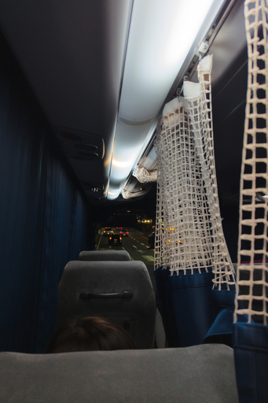

必死にお金をためて 2 年ぶりに上高地を訪問することにしていました。今日がその出発日で交通手段は例年と同じくアルピコ交通さんのさわやか信州号です。今回もお世話になります。
今年のさわやか信州号大阪発上高地行きは梅田のバスターミナルを夜 9 時半に発車します。なので最寄りの JR 茨木駅へのバスには夜 8 時に乗ればいいのですが、早々に荷造りも終わってしまって少々退屈していました。そのため、まだ夕方の 6 時と出かけるにはちょっと早いのですがさっさと家を出てしまいました。
梅田で喫茶店に入って時間を潰したりしてすごして乗車時間近くにバスの改札に向かい乗車しました。今回も障害者割引を受けるので手帳も忘れずに持ってきています。忘れると乗車自体ができなくなるので障害者割引を受ける人は手帳を忘れてはいけません。同行者にも迷惑をかけることになります。
荷物を整理して座席に着くともうすることは寝ることだけです。ですがさわやか信州号は例年だと京都を出るまでは車内灯が煌々と点いています。消灯まで眩しくて寝れません。今年は京都を出てすぐではなくバスが草津 SA を出てからの消灯ですでに日が変わっていました。もっと早く消灯してほしかった。
あと今年の便では下の画像のように通路側にカーテンが設置されるようになっていて、コンパートメント感が増し増し状態でした。冷房の効率もよさそうです。このカーテンはやはりコロナの影響で設置されるようになったのでしょうか。2022 年のときにはありませんでした。もしかすると気づいてなかっただけなのかもしれませんけど。
新御堂、中央環状、名神高速と走ってバスは夜行便唯一の乗客の休憩場所である草津 SA に入ります。20 分ほどの休憩でした。休憩時間は道路状況等によって運転手さんが判断して決めるようです。自分はトイレに行きたいわけでもなく SA で買い物したいわけでもないので例年通りバスの中にずっといました。
また休憩の回数や休憩の場所は年によって違ったり交通状況により変わるので、どのタイミングでどこで休憩するのかはバスが実際に走ってみないとわかりません。不確定要素があるもの旅の楽しみです。
バスが草津 SA を出て、しばらく名神高速を北上したら消灯です。おやすみなさい。